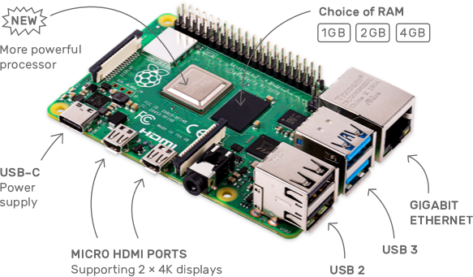

class: center, middle # A Vulkan driver for Raspberry Pi 4 A lesson in futility <a style="position: absolute; left: 1em; bottom: 1em; z-index: 0;" title="Developers for Firefox" rel="nofollow" href="https://www.mozilla.org/firefox/this-browser-comes-highly-recommended/?utm_source=devs-for.firefox.com&utm_medium=referral&utm_campaign=devs-for-firefox&utm_content=Developers_For_Firefox_Light"> <img style="border:0 none;" alt="Developers for Firefox" srcset="https://code.cdn.mozilla.net/for-firefox/badges/assets/Developers_For_Firefox_Light.png, https://code.cdn.mozilla.net/for-firefox/badges/assets/Developers_For_Firefox_Light-2x.png 2x" src="https://code.cdn.mozilla.net/for-firefox/badges/assets/Developers_For_Firefox_Light.png"> </a> --- name: agenda # Agenda 1. ℹ️ Who, What and Why 1. Raspberry Pi 4 1. Mesa 1. Gallium V3D 1. V3DVK 1. ♾️ Future --- <style> #android, #gofandroid, #gofswitch, #horizon { height: 9em; width: 16em; } .middle { top: -6em; } .middle div { position: relative; top: 7em; } #android { background:linear-gradient(0deg, green 0%, rgb(0, 255, 0) 140%); } #horizon { background:linear-gradient(0deg, rgb(190, 0, 0) 0%, rgb(255, 0, 0) 140%); } #android .round, #horizon .round { position: relative; top: -0.5em; background-color: rgba(255, 255, 255, 0.5); } #android .round { width: 80%; left: 10%; } #horizon .round { width: 50%; left: 40%; } #horizon #horizon-nvn { width: 80%; left: 10%; top: 0.2em; background-color: rgba(255, 255, 255, 0.7); } </style> # ❔ Who Name: Andreas Bergmeier GitHub: <a href="https://github.com/abergmeier">@abergmeier</a> Twitter: <a href="https://twitter.com/a_bergmeier">@a_bergmeier</a> Work: Developer at <img src="Otto_GmbH_logo.svg" height="10px"> 2017 worked on: <div class="layer_contained"> <div id="android" class="layer middle first"> <div>Android</div> <div class="round">Vulkan</div> </div> <div id="horizon" class="layer middle second"> <div>Horizon (Nintendo Switch)</div> <div id="horizon-vk" class="round">Vulkan</div> <div id="horizon-nvn" class="round">NVN</div> </div> --- # ⚙️ What Expose a Vulkan interface for Raspberry Pi4 B - Implement a (userspace) C ABI using Mesa - Interact with DRM V3D (there are no open hardware specs) - Use as much Gallium V3D code (for **V**ideo**C**ore **6**) as possible ➡️ **v3dvk**: <a href="https://github.com/abergmeier/mesa-vulkan-broadcom">github.com/abergmeier/mesa-vulkan-broadcom</a> --- # 😵 Why - Experience using Raspberry Pi at work (Dashboards, Scrum-Board, Microsoft Teams) You need every little bit of speedup when running a browser - Never been very fond of OpenGL - 💌 Most experience with C++, Go, C, ... - ⏳ Have > one hour commute to and from work - 🔩 WebGPU maybe? --- # Raspberry Pi 4 (B+) ## Recap  - Release in 2019 - *< insert complaint here >* - Should be capable to support Vulkan 1.1 - CPU can do <a href="https://www.raspberrypi.org/forums/viewtopic.php?t=250730">64bit</a> (arm64/aarch64) - VideoCore VI 3D is <a href="https://www.raspberrypi.org/documentation/hardware/raspberrypi/bcm2711/README.md">32bit</a> --- <style> #bcv { background:linear-gradient(0deg, #FF4136 0%, rgba(255, 0, 0, 0.8) 100%); } #v3dvk { background:linear-gradient(0deg, #7FDBFF 0%, rgba(0, 0, 255, 0.8) 100%); } #v3dv { background:linear-gradient(0deg, #FFDC00 0%, rgba(0, 255, 255, 0.8) 100%); } #rpi-vk { background:linear-gradient(0deg, #F012BE 0%, rgba(127, 255, 255, 0.8) 100%); } .vcs { border-style: dashed; border-width: 2px; background-color: rgba(var(--color), 0.5); } #vc4 { --color: rgb(255,140,0); border-color: white; background: linear-gradient(0deg, rgb(255,140,0) 0%, rgba(255,140,0,0) 100%); } #vc6 { --color: rgb(255,165,0); border-color: white; background: linear-gradient(0deg, rgb(255,165,0) 0%, rgba(255,165,0,0) 100%); } #drivers { align-items: center; display: grid; grid-template-columns: repeat(4, 20%) 2em; grid-template-rows: 2em repeat(2, 7em); } #drivers .top { grid-row: 2; } #drivers .bottom { background-color: var(--color); grid-row: 3; } #drivers .layer *, #drivers .layer:hover * { transition: all 0.5s; } #drivers .layer { width: 100%; height: 100%; } #drivers .layer:hover span { visibility: visible; font-size: 50%; } #drivers h2, #drivers h3 { margin: 0px; font-size: 100%; } #drivers .subgrid { display: grid; grid-column-gap: 1em; grid-row: 1 / 4; grid-template-columns: subgrid; grid-template-rows: subgrid; } </style> # 🌠World of Raspberry Pi Vulkan drivers <div id="drivers"> <div class="subgrid" style="grid-column: 1 / 5;"> <div id="vc6" class="subgrid vcs" style="grid-column: 1 / 6;"> <label style="grid-row: 1; grid-column: 1 / 4"><h2>VideoCore 6</h2></label> <div style="grid-column: 1;"><div id="bcv" class="layer top">🌫️<h3>Broadcom</h3><span>Evidence: <a href="https://www.khronos.org/conformance/adopters/conformant-products/vulkan#submission_344">khronos.org/...</a></span></div></div> <div style="grid-column: 2;"><div id="v3dvk" class="layer top">🆕<h3>v3dvk</h3><span>Developed by Andreas Bergmeier<br>based on Mesa3D</span></div></div> <div style="grid-column: 3;"><div id="v3dv" class="layer top">🛑<h3>v3dv</h3><span>Started by Eric Anholt: <a href="https://gitlab.freedesktop.org/anholt/mesa/commits/v3dv">gitlab.freedesktop.org/...</a><br>based on Mesa3D</span></div></div> <div style="grid-column: 1 / 4;"><div id="kernel-v3d" class="layer bottom"><h3>V3D</h3><span>Maintained by Eric Anholt: <a href="https://github.com/torvalds/linux/tree/master/drivers/gpu/drm/v3d">github.com/...</a></span></div></div> </div> <div id="vc4" class="subgrid vcs" style="grid-column: 6 / 7;"> <label style="grid-row: 1; grid-column: 6"><h2>VideoCore 4</h2></label> <div style="grid-column: 1;"><div id="rpi-vk" class="layer top">➰<h3>rpi-vk</h3><span>Developed: <a href="https://github.com/Yours3lf/rpi-vk-driver">github.com/...</a><br>outside of Mesa3D</span></div></div> <div style="grid-column: 1;"><div id="kernel-vc4" class="layer bottom"><h3>VC4</h3></div></div> </div> </div> <label style="grid-row: 2; grid-column: 6; transform: rotate(-90deg);">Userspace</label> <label style="grid-row: 3; grid-column: 6; transform: rotate(-90deg);">Kernel</label> </div> --- # 📦 Mesa ## Top level view - 🧠Biggest part of Mesa seems Gallium (OpenGL drivers) Slowly gets more infrastructure for Vulkan Cannot differentiate Common, Gallium, Vulkan by Symbol name - 👠Gallium V3D supports VideoCore 6 - 🙠Hard to use base libraries without including Gallium Gets slowly cleaned up - 🤔 Vulkan drivers have monolithic `myv_private.h` header ⇒ iterating slow ⇒ finding symbols hard --- # 📦 Mesa ## Culture - The mesa cult - Feels pretty closed off to me - Seems to get better --- # 📦 Mesa ## Build systems - Various but mostly seems to be Meson!? - Meson - *< insert problem here >* - Probably okish --- # 🗠Mesa Broadcom library ## Pros - Uses variant generation: XML ⇨ Python ⇨ Headers & Compilation Units - Documents problems <div><a href="https://gitlab.freedesktop.org/mesa/mesa/blob/master/src/broadcom/cle/v3d_packet_v33.xml">here</a>,<br> <a href="">here</a><br>and</div> --- # 🮠Gallium V3D ## Pros - Builds command lists via Macros ```C void foo(...) { cl_emit(&job->bcl, FLAT_SHADE_FLAGS, flags) { flags.varying_offset_v0 = varying_offset; flags.flat_shade_flags_for_varyings_v024 = varyings; } } ``` - Switches internally to correct variant\* \*mostly. - Makes code readable - Trusts in compiler optimizations --- # 🮠Gallium V3D ## Cons - Macros make debugging harder - May leave some perf on the table - OpenGL - Dirty flags - Implicit effects - Missing parallelism --- # ▶️ Getting started (universal) 1. **Decide where to steal** One of the earliest Mesa Vulkan drivers was Intel _anv_. _anv_ has been around a while. They work with a **U**nified **M**emory **A**rchitecture. RPI has UMA. So base most around _anv_. 2. **Steal** Copy entrypoints, trampolines infrastructure from _anv_. Get familiar with _meson_. 3. **Implement** Change code to work with V3D. 4. **Repeat** Jump back to 2. --- # 🔠Continue (myself) 5. **Choose SCM platform** Bad experience with GitLab so host all my code on GitHub. 6. **Enable SSH access through firewall** Crucial to be able to deploy and test as easy as possible. 7. **Start using Vulkan CTS** Little sense in writing basic driver tests yourself. CTS has most stuff already implemented and tests. Problem: - CTS is mostly not documented. Will have to invest quite some time to read through the code and understand what they are trying to setup. 8. **Implement CI** Need cost effective CI. GitLab is not that. Since I have experience with _Google CloudBuild_ at work, run CI on that. 9. **Optimize for turnaround times** Most Mesa/Vulkan code has a monolithic header. I only have an old laptop and limited time. --- # 🕰️ Timeline - 2019-08-06: API sufficient for `vulkaninfo` - 2019-10-27: First Vulkan CTS is passing - 2019-11-01: Setup CI - 2019-11-05: Release binary snapshots to GitHub Releases - 2020-01-28: 64 Vulkan CTs passing --- # æ§ Meanwhile - Make a talk for FOSDEM 🤘 - ↬ Switching to base off of **turnip** Some learnings from _anv_ and _radv_. **turnip** code is nearer than _anv_ - 🤔 Try to figure out how to get **Compute shaders** working --- # 🛣️ Roadmap # RPi - More coding # Vulkan CTS - Map between Tests ⇐1:n⇒ API calls